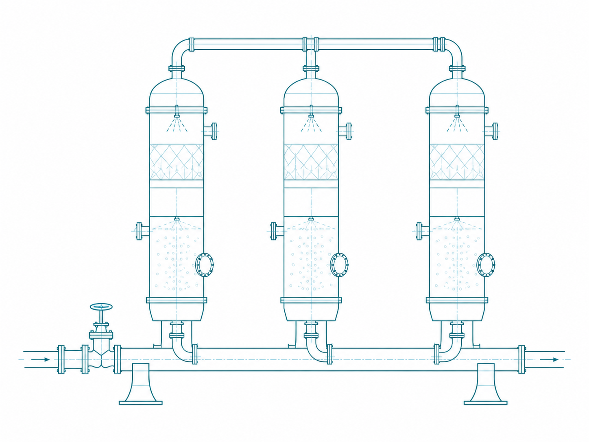

Instrumentation and control guide
Pressure and Temperature Measurement Instruments
Pressure and Temperature Measurement Instruments is a foundational instrumentation and control topic within Process Measurement. It supports clear definition of the operating basis, selection of an appropriate method, and responsible preliminary engineering decisions.

- Content type
- Instrumentation and control guide
- Level
- Engineering › Instrumentation and Control Engineering › Process Measurement › Pressure and Temperature › Pressure and Temperature Measurement Instruments
- Audience
- Student · Design engineer · Project engineer · Plant engineer
- Last reviewed
- 30 August 2026
What Is Pressure and Temperature Measurement Instruments?
Pressure and Temperature Measurement Instruments is a foundational instrumentation and control topic within Process Measurement. It supports clear definition of the operating basis, selection of an appropriate method, and responsible preliminary engineering decisions.
Why Is It Important in Engineering?
This topic must be assessed in the context of its stated system boundary, operating condition, material or fluid basis, interfaces and applicable requirements. The title identifies the subject; the actual engineering result depends on verified project data and a method suitable for the service.
Key Terms and Definitions
- Pressure and Temperature Measurement Instruments
- The specific subject defined by this page title.
- Pressure and Temperature
- Use an applicable source definition and a declared service basis.
- Process Measurement
- Use an applicable source definition and a declared service basis.
- Operating basis
- Use an applicable source definition and a declared service basis.
Fundamental Principle
This topic must be assessed in the context of its stated system boundary, operating condition, material or fluid basis, interfaces and applicable requirements. The title identifies the subject; the actual engineering result depends on verified project data and a method suitable for the service.
Formulae, Symbols and Units
Applicable engineering relationship
Use the documented method appropriate to the actual service.
Pressure and Temperature Measurement Instruments does not have one universal equation. Select the relationship, property source or standard that applies to the defined system and conditions.
Unit consistency
Use one declared unit system and state the condition basis of all properties, dimensions, loads and measurements.
Assumptions and Validity Range
- The selected method represents the actual duty and configuration.
- Inputs are current, traceable and compatible with the stated condition.
- Code, safety, supplier and project requirements are reviewed separately.
Factors Affecting the Result
Design basis
The defined duty, operating envelope and intended performance of Pressure and Temperature Measurement Instruments.
Physical context
The relevant geometry, material, fluid, equipment condition and process interfaces.
Project constraints
Applicable safety, reliability, maintainability, environmental and code requirements.
Step-by-Step Engineering Method
- Define the system boundary, duty and operating envelope for Pressure and Temperature Measurement Instruments.
- Collect verified drawings, process data, material/fluid information and interface conditions.
- Select an applicable source, equation, standard or supplier method.
- Complete the calculation or qualitative assessment on one consistent basis.
- Review limitations, safety implications, maintainability and the need for qualified sign-off.
Illustrative Engineering Example
Hypothetical example — not a design calculation
A team compares a preliminary option against the required duty. It first confirms the scope and inputs, applies a suitable documented method, and then checks the result with the relevant equipment, layout, safety and maintenance constraints.
Industrial Applications
- Concept selection and preliminary studies involving Pressure and Temperature Measurement Instruments.
- Design-basis development and cross-discipline coordination.
- Operation, inspection, troubleshooting and maintenance planning.
Common Mistakes and Limitations
- Using generic values without checking service conditions.
- Ignoring interfaces with equipment, structures, controls or safety systems.
- Treating an educational page as final project approval.
Frequently Asked Questions
Can this page be used for final design?
No. It is educational and preliminary reference material; final decisions need project data, applicable requirements and qualified engineering review.
What should be verified first?
Verify the actual service condition, geometry, material/fluid, loads and governing project or supplier basis.
Why are related resources included?
They show the context needed to avoid treating an individual topic as an isolated design decision.
References
- Lipták, B. G. Instrument Engineers’ Handbook. CRC Press.
- Seborg, D. E., Edgar, T. F., Mellichamp, D. A. and Doyle, F. J. Process Dynamics and Control. Wiley.
This is an original educational summary and does not reproduce protected book text, tables, figures or standards material.